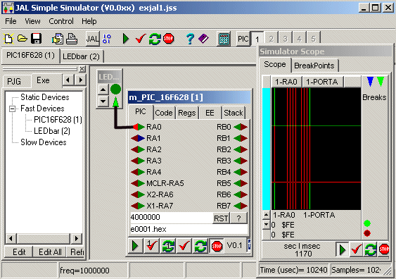
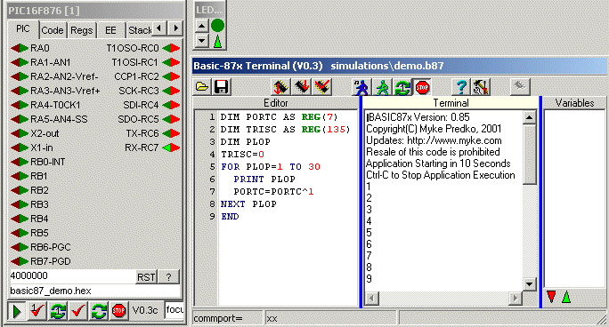

january 2003
JALss, Simple Simulator, Demos
|
Demo 1, blinking LED This is the orginal first example of Wouter. There are made 2 small changes to the program e00001, target is changed to 16F628 and time is set to 10 msec instead of 1 sec. After the program is started, you should see an image almost similar to the image on the right. The electronic circuit consist of 2 devices, the PIC16F628 and a LED. The image on the screen will not show the electrical connection wires between the devices, these are only drawn in the image on the right for clearity (but there are other ways to see the connections).. Now just press the RUN button (green arrow), and see how the LED flashes, the scope signals are moving. After running for a while, now press the stop button and look at the scope, try to measure time and look at the other tabs of the PIC. |
 |
Demo2, nightrider with 2 PICs
We are now going to select another circuit.
At the left you see a number of tabs, currently the "EXE" tab is shown, displaying the devices in the current circuit.
Select the projectgroup tab "PJG", it will show a list of currently available circuits.
Select the project "ExJAL2.jss" > right mouse button > open (or doubleclick)
Now a new circuit will be opened, containing the same blinking LED and a second PIC connected to an array of LEDs and programmed with Wouter's nightrider example.
Press the run button (wherever you like) and watch that both the LED array and the blinking LED are walking simultanuously, despite that both Xtal frequencies are different.
Watch that one of the LEDbar pins is not connected, now connect this, by pressing the dark green triangle, a list of available outputs will be shown, select: all outputs --> PIC16F628(1) --> RB2 and press "select" , now also this pin is connected.
Now press the stop button and on both PICs select the code page.
Now goto the first PIC (window with the header ...[1]) and press the "checkmark with the 1", meaning to do 1 single step with this device.
The checkmark button will highlight and now (as long as this PIC window has focus) you can single step the first PIC with the spacebar.
Watch how both PICs steps, each at his own speed, through the code .....
Demo 3, LEDbar + RS232
Now select the demo EXJAL3.JSS and start the simulation.
You'll see a PIC, a LED-bar and a RS232 terminal. In the upper memo of the RS232-terminal type a decimal ("51") or a hexadecimal ("$33") number and press Enter. Now you'll see the LEDbar displaying (in binary) the number you've typed. The PIC will also send a character with a value 1 higher back to the RS232 terminal, which you can see in the lower memo of the RS232-terminal.
Now we're going to change the Baudrate and will see how JALss interacts with JALcc. Press the button "JAL" (at the top of JALss). This will stop the simulation, start and focus JALcc.
In JALcc edit the file and change the baudrate to 115_200.
Then Press F6. This will compile the file, download the program into JALss and give back the focus to JALss.
Here a windows problem might occure (at least in XP), for which I've not found a workaround yet. Although JALss gets focus, windows caption is highlighted and scope will come to the front, but JALss stays in the back :-(
If this happens, just click on the scope and you will get back to JALss (with the new file loaded)
Now goto the settings page of the RS232, enter the new Baudrate "115200" and press Enter to activate the new Baudrate.
Start the simulation again, and try to send some characters or numbers to the PIC.
For all who have trouble getting serial software working: the pic program consists of a pure software RS232-routine (connected to the pins RA0 and RA1), now running at 115 kB !!
Demo4, LCD + RS232
Now select the demo EXJAL4.JSS and start the simulation.
A small simulation, showing the possibilities of the LCD library. Unfortunatly, the animated characters can not be seen, because they are not (yet) implemented in JALss.
Wait till the text "type some chars" appears, then you can enter ASCII text through the upper memo of the RS232 terminal.
In this case the RS232 communication runs in hardware at 115 kB.
Demo5, Keys, Stepper, RS232
This demo shows the stepper motor module, it uses TMR0 and interrupt procedures.
This example also show how to add a device, connect the device to other components and how to use the device "data2file".
When the simulation is started, you can control the motor with the switches on the left. Look at the speed or Signals tab of the motor.
When the bottom switch is down you can control the stepper with the RS232 terminal
$02 = start
$04 = stop
$32 $05 = set speed from table, element 5
$50 = get position
For an overview of commands, see the stepper library.
If you look at the main JAL program, you'll see that the program contain a lot JALcc macros.
Now we're going to add a device "data2file", which is able to record some signals for viewing with an external program.
Inserting the data2file device
Setting the parameters of the new device
Connecting the device
Now start the simulation and control the motor in some way.
Now you can view the recorded datafile in Excel (or any other modern spreadsheet program, in Excel, just open and press on finish) .
Demo6: evalution of multibyte math routine
Demo7:XCSB demo + 7segment + inline breakpoint
|
Demo 8 Basic87x with intelligent terminal - select BASIC87X.JSS - press the run button - and watch - after the program has finished, try your own basic commands The terminal is also available as a standalone terminal for a real BASIC87x-pic. More information about the basic87x-terminal. |
 |
Next Steps